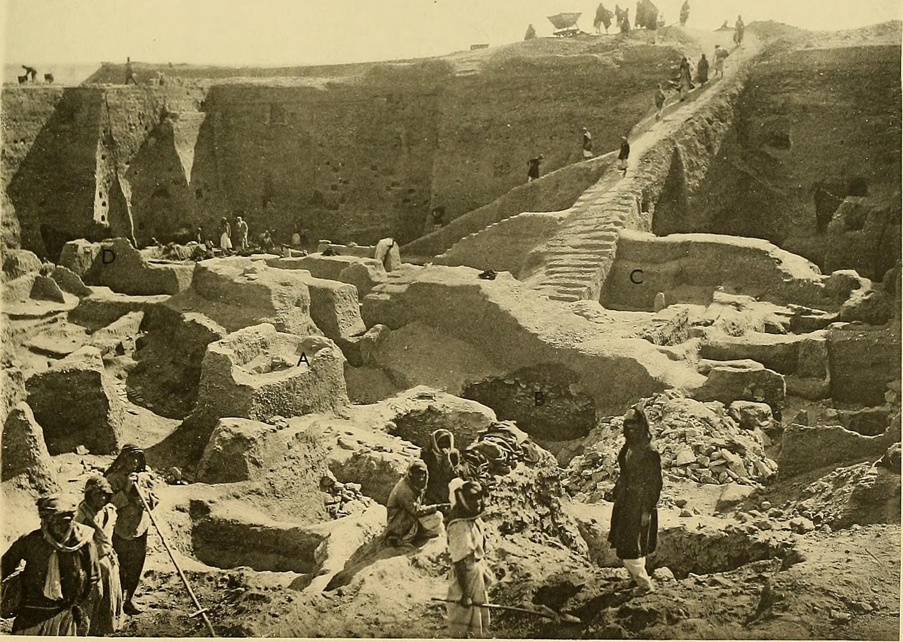
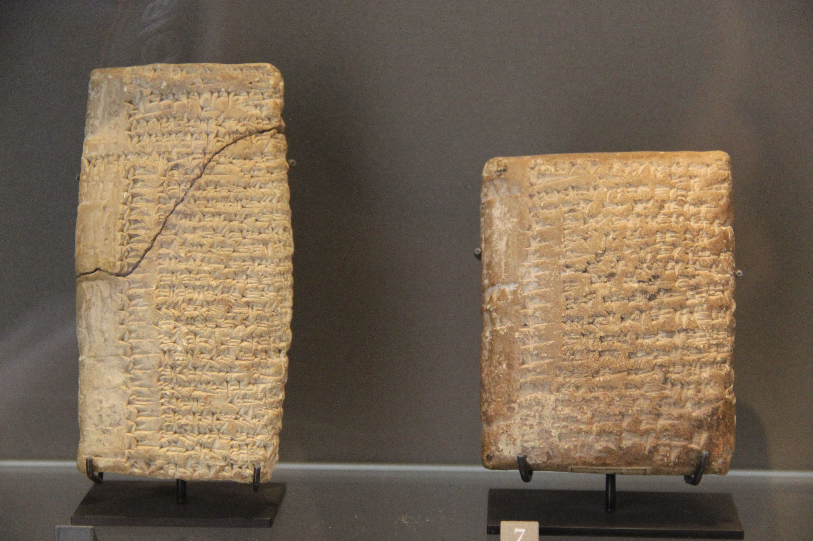

Abraham, Isaac y Jacob: los padres fundadores de un pueblo. ¿Fueron personajes históricos? La arqueología no los encuentra, pero sí ilumina el mundo de sus relatos —y revela cuándo se escribieron—.
Con los patriarcas entramos en un terreno distinto. Hasta ahora habíamos tratado relatos de los orígenes del mundo (creación, diluvio, Babel); ahora llegamos a los orígenes de un pueblo. Abraham, su hijo Isaac y su nieto Jacob son las figuras fundacionales de Israel. Y aquí la pregunta histórica se vuelve más delicada, porque el debate académico es real y merece matices.
Según el relato, Abraham nació en Ur de los caldeos, una de las grandes ciudades de la antigua Sumeria, y de allí partió en un viaje que lo llevaría a Canaán. Ur existió de verdad: fue excavada por Leonard Woolley en los años 20, que sacó a la luz su gran zigurat y las espectaculares "tumbas reales". Es decir, el escenario del relato es real y arqueológicamente conocido.

Que exista el escenario, sin embargo, no significa que existan los personajes. Del mismo modo que una novela puede ambientarse en un Londres real con protagonistas ficticios, un relato puede situar a sus figuras en ciudades históricas sin que ellas mismas lo sean. Y sobre Abraham, Isaac y Jacob, la arqueología se topa con un silencio: no hay ninguna evidencia directa de su existencia, ni se espera encontrarla, dado que eran, según el propio relato, jefes de clán nómadas que no dejarían huella monumental.
Las ciudades de los relatos patriarcales (como Ur) son reales. Pero de Abraham, Isaac y Jacob no hay ninguna evidencia arqueológica directa. La mayoría de los especialistas duda de que fueran personajes históricos en sentido estricto.
Hay una vía indirecta muy reveladora: los anacronismos. Son detalles del relato que no encajan en la época en que supuestamente vivieron los patriarcas (hacia el 2000-1800 a.C.), sino en una época muy posterior —lo que delata cuándo se puso por escrito la historia—.
El ejemplo más famoso son los camellos. El Génesis presenta a los patriarcas usando camellos domesticados como algo habitual. Pero los estudios arqueológicos —incluida la datación por radiocarbono de huesos de camello en el valle de Aravá— sitúan la domesticación generalizada del camello en la región hacia el siglo X a.C., casi un milenio después de la supuesta época de Abraham. Otros anacronismos apuntan en la misma dirección: la mención de los filisteos (que llegaron a la región mucho después) o de ciudades que aún no existían. El texto, en su forma actual, se compuso siglos después de los hechos que narra.
Conviene la honestidad: algunos estudiosos, sobre todo de tendencia conservadora (como Kenneth Kitchen), discuten estos anacronismos y señalan menciones aisladas de camellos más tempranas. El debate existe. Pero el conjunto de indicios —no un solo dato— inclina a la mayoría hacia una composición tardía.
Aquí viene lo fascinante, y lo que evita que este sea un episodio meramente "negativo". Aunque la arqueología no encuentre a los patriarcas, sí ha iluminado extraordinariamente el mundo social en el que se ambientan sus historias. Las tablillas de ciudades como Mari y Nuzi, del segundo milenio a.C., describen costumbres sorprendentemente parecidas a las de los relatos patriarcales: contratos de matrimonio, adopción de herederos, el estatus de las esposas y las siervas, los derechos de primogenitura.

Estos paralelos alimentaron durante décadas la hipótesis de que los relatos, aunque escritos tarde, conservaban memorias auténticas de un trasfondo del segundo milenio. Hoy esa idea se matiza: muchas de esas costumbres también existían en épocas posteriores, así que no prueban una fecha temprana. Pero muestran algo valioso: los relatos no son pura fantasía tardía, sino que se nutren de un poso cultural real del Cercano Oriente.
¿Cómo entender entonces a los patriarcas? La lectura académica más extendida los ve como figuras fundacionales: relatos que un pueblo contó sobre sus orígenes para explicar quién era, de dónde venía y por qué habitaba su tierra. No son crónica periodística, pero tampoco invención arbitraria: son memoria cultural, esa mezcla de tradición, identidad y teología con la que las sociedades antiguas narraban su pasado.
Esto no decide la cuestión de la fe. Alguien puede sostener la historicidad de Abraham como convicción religiosa; lo que la serie constata es que la evidencia arqueológica no la confirma y que varios indicios apuntan a una composición tardía. Distinguir entre lo que la arqueología puede probar y lo que pertenece al terreno de la fe es, precisamente, el ejercicio que este blog propone.
Abraham, Isaac y Jacob fueron personas reales del II milenio a.C.; los relatos conservan memorias auténticas de sus vidas, y los presuntos anacronismos son discutibles.
No hay evidencia de su existencia; los anacronismos delatan una composición del I milenio a.C. Son memoria cultural e identidad, ambientada en un mundo real pero no crónica histórica.
Lectura: hay amplio acuerdo en que no existe evidencia de los patriarcas y en que los relatos, en su forma actual, se compusieron tardíamente (anacronismos). El grado de memoria histórica que conservan es objeto de debate real entre especialistas, más que en otros episodios de esta serie.
El escepticismo sobre la historicidad de los patriarcas se consolidó con Thomas L. Thompson (The Historicity of the Patriarchal Narratives, 1974) y John Van Seters (Abraham in History and Tradition, 1975), y es hoy mayoritario (cf. Finkelstein y Silberman, The Bible Unearthed). El anacronismo de los camellos se apoya en el estudio de Sapir-Hen y Ben-Yosef (Universidad de Tel Aviv, 2013) sobre la domesticación en el valle de Aravá.
La postura que defiende un núcleo histórico temprano (K. Kitchen y otros) se recoge con equidad: el debate sobre el grado de memoria auténtica es genuino. Los paralelos de Mari y Nuzi son reales, aunque hoy se consideran menos concluyentes como prueba de datación que en las décadas de Albright.
La entrega separa explícitamente lo que la arqueología puede establecer (ausencia de evidencia, anacronismos) de la cuestión de fe sobre la historicidad, que no es de su competencia.